Démarrer un document
L'accueil ne garde aucune liste de fichiers : rien n'est mémorisé à votre place. Deux portes d'entrée seulement, et vos documents restent là où vous les rangez.
L'accueil
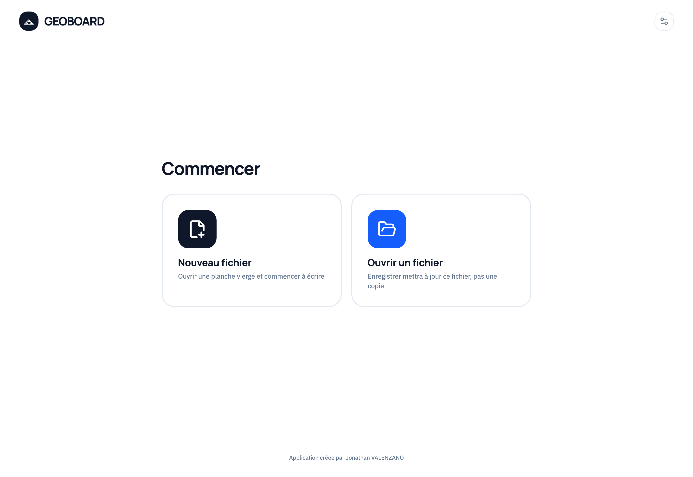
Nouveau fichier
Une fenêtre demande le format avant de créer la planche :
- Feuille A4 (210 × 297 mm) ou page infinie sans bord
- Couleur du fond : blanc, gris clair, gris, crème, bleu pâle, vert pâle
- Structure du fond : uni, quadrillage, ou lignée avec marge rouge
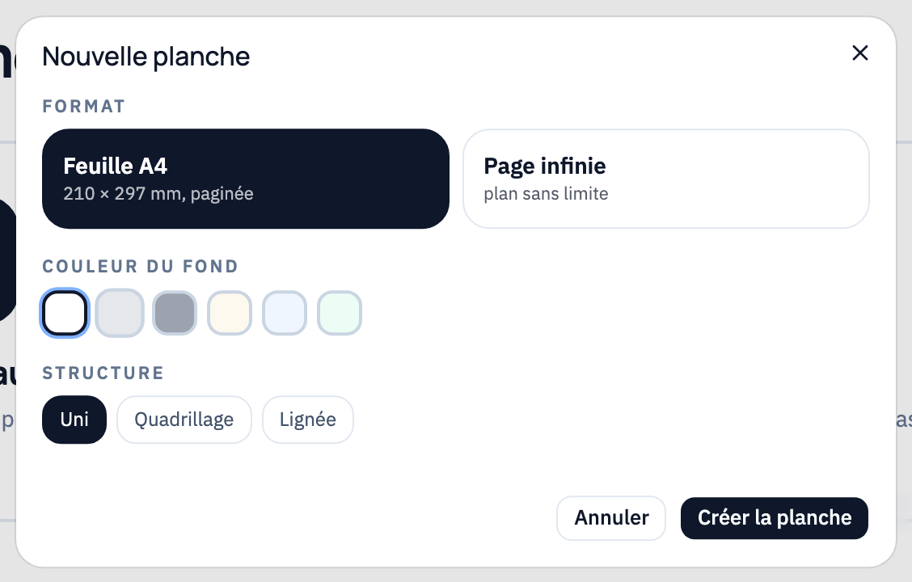
Ouvrir un fichier
Reprend un document .geoboard depuis votre stockage. Important : ensuite,
« Enregistrer » met à jour ce fichier, il ne crée pas une copie à côté.
Sur iPad, les documents enregistrés par l'app apparaissent aussi en bas de l'accueil, et dans Fichiers → Sur mon iPad → GEOBOARD.
Plusieurs documents à la fois
Une barre d'onglets, sous la barre du haut, liste les planches ouvertes. Le bouton + en crée une nouvelle. Fermer un onglet demande d'abord si vous voulez enregistrer.
Chaque onglet se souvient de la page que vous regardiez.
Écrire et effacer
Quatre crayons restent disponibles en permanence dans la barre d'outils, chacun avec sa propre couleur et sa propre épaisseur — de quoi passer du noir au rouge de correction sans ouvrir un seul menu.
La barre d'outils
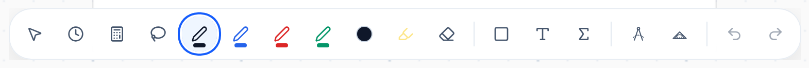
Les 4 crayons
Un clic sur un crayon le sélectionne ; l'icône porte sa vraie couleur. La palette voisine change la couleur et l'épaisseur du crayon actif seulement.
- Épaisseurs : très fin 0,4 mm · fin 0,8 mm · moyen 2 mm · épais 4 mm
- 24 encres, du noir au marron, blanc inclus (pour écrire sur un fond sombre)
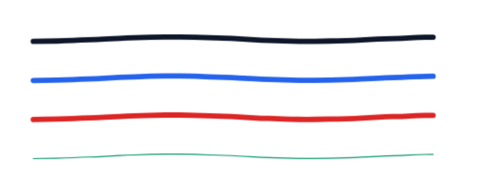
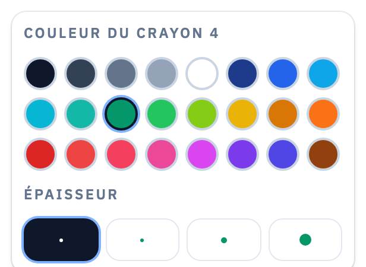
Surligneur
Quatre encres pastel posées en transparence sous l'écriture : le texte reste lisible au travers, à l'écran comme dans le PDF exporté.
- Largeurs : 4 mm, 8 mm, 14 mm
- Bande droite : le trait ne garde que ses deux extrémités, donc parfaitement rectiligne
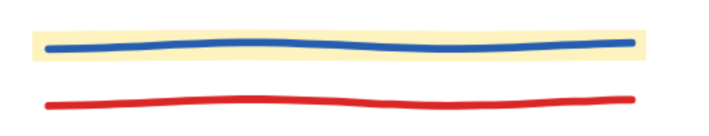
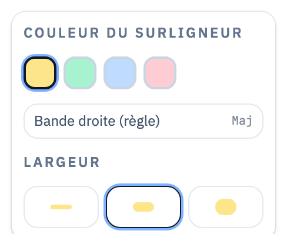
Gomme qui grignote
Elle n'efface pas l'objet entier : elle enlève uniquement la partie du trait qui passe sous le disque et coupe le reste en morceaux intacts. Comme une vraie gomme.
- Cinq tailles : 0,75 · 1,5 · 4 · 8 · 16 mm de rayon
- Le choix de la taille n'apparaît que quand la gomme est active
Stylet prioritaire
Tant que le stylet écrit, les contacts de peau sont ignorés : vous pouvez poser la main sur l'écran comme sur un cahier sans que le trait saute.
Deux doigts font le zoom et le déplacement ; si le stylet arrive pendant que les doigts sont posés, c'est le stylet qui gagne.
Annuler / Rétablir
Jusqu'à 60 étapes en arrière, sur les traits, les figures et les blocs de texte, et l'historique traverse les pages.
Instruments de géométrie
C'est le cœur de GEOBOARD : des instruments qui se comportent comme les vrais, à la bonne taille, et qui tracent juste.
Équerre type Aristo
Triangle rectangle isocèle transparent, 160 mm de base pour 80 mm de haut, avec sa bande rapporteur jaune à double lecture (10 à 170° dans les deux sens), ses graduations millimétriques et ses lignes parallèles cotées en cm.
- Le corps déplace l'équerre, l'anneau intérieur la fait tourner
- Le corps n'est jamais une surface d'écriture : seuls les bords tracent
- Transparence réglable de 15 à 100 %, avec trois réglages rapides
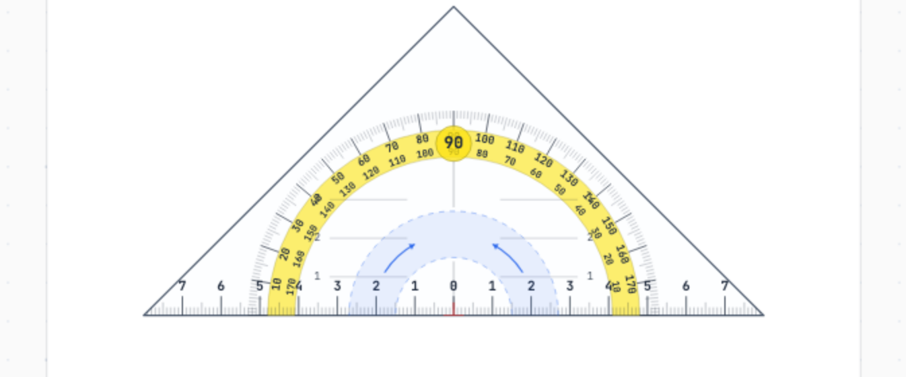
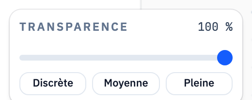
Le trait reste droit
Quand le crayon démarre près d'un bord de l'équerre, il se verrouille sur la droite de ce bord pour tout le trait. La main peut déraper en cours de route : la ligne reste parfaitement rectiligne, exactement comme si le crayon butait contre le plastique.
Compas réaliste
Dessiné comme l'instrument : tête moletée, branche à pointe sèche, branche portant un crayon jaune. Chaque partie a son rôle, et nulle part ailleurs il ne réagit — la pointe sèche reste plantée.
- La tête déplace tout le compas
- La branche du crayon ouvre et ferme, avec le rayon affiché en cm en direct
- La pointe du crayon trace, à rayon verrouillé : cercle complet à 360° possible
- Un point noir marque le centre à la fin du tracé, pour le retrouver
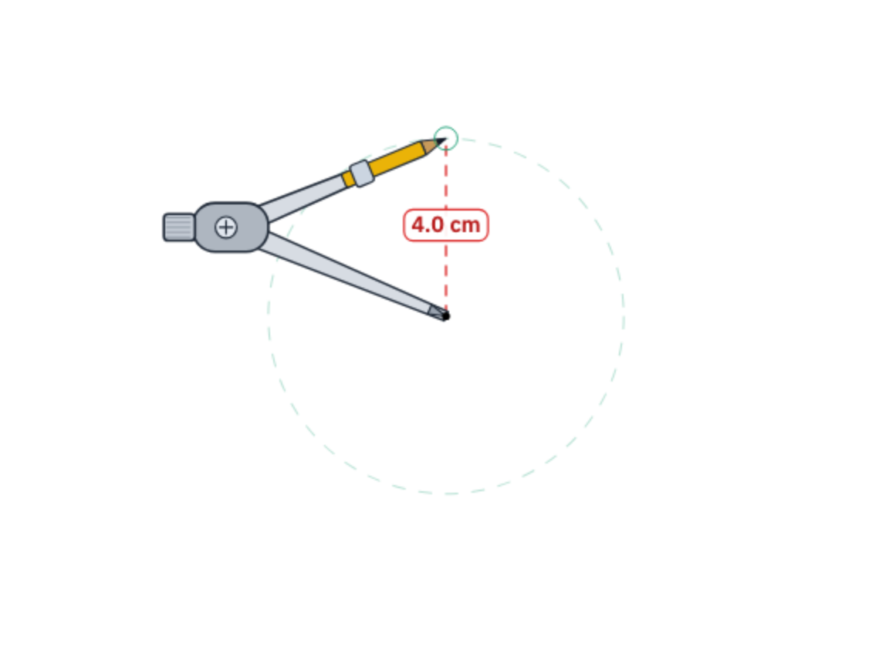
Vraie grandeur
Tout est stocké en millimètres du monde réel. À 100 % de zoom, 1 mm du document fait 1 mm à l'écran : les mesures prises à l'équerre ou au compas sont les bonnes.
Zoom à la molette, au pincement à deux doigts, par les boutons −/100 %/+, ou par les ajustements Largeur et Hauteur de page.
Formes géométriques
Six figures vectorielles, donc nettes à tous les zooms et exportées telles quelles dans le PDF.
Les six figures
Segment, rectangle, carré, cercle, ellipse, triangle. On les trace en glissant.
- Couleur du trait au choix parmi les 24 encres
- Trait plein ou pointillés
- Intérieur vide (transparent) ou coloré, avec réglage de transparence
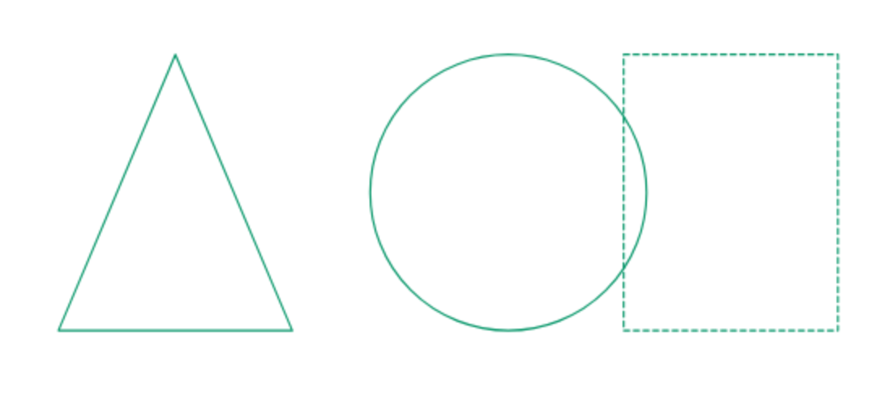
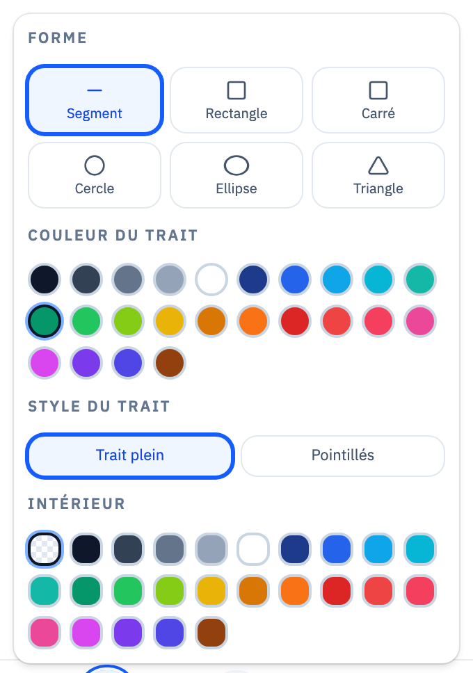
Retoucher une figure
Avec l'outil Sélectionner, un clic sur la figure ouvre son menu juste à côté (jamais par-dessus, pour pouvoir continuer à la déplacer).
- Déplacer en glissant, même si l'intérieur est vide ; redimensionner par la poignée bleue
- Changer couleur, épaisseur, style de trait, remplissage
- Écrire un nom dans la figure (« ABCD »), centré automatiquement
- Avancer / reculer dans les calques
Texte et mathématiques
Deux outils distincts : du texte mis en forme, et de vraies formules composées puis rendues typographiquement.
Texte enrichi
Un clic avec l'outil Texte pose le curseur à l'endroit exact et ouvre toute la barre de mise en forme, champ déjà actif. Un bloc laissé vide disparaît.
- Quatre familles : Sans, Serif, Mono, Titre
- Taille de 3 à 72 mm, avec boutons A− / A+
- Gras, italique, souligné, exposant et indice réels sur n'importe quelle lettre
- Alignement, listes à puces ou numérotées, couleur de fond
- Largeur de bloc réglable (retour à la ligne) et calques avancer / reculer
- Lien cliquable : exporté comme vraie annotation de lien dans le PDF
Écriture mathématique
Le composeur affiche la formule en direct pendant la frappe. La palette est rangée en six familles dépliables, une seule ouverte à la fois :
- Fractions & racines — fraction, racine carrée, racine n-ième, fraction composée, %
- Puissances & indices — exposant, indice, carré, cube, puissance de dix, terme suivant
- Géométrie — angle ÂBC, segment, vecteur, parallèle, perpendiculaire, degré, π, triangle
- Opérateurs — × ÷ ± ≤ ≥ ≠ ≈ ∈
- Analyse & fonctions — f(x), sin, cos, tan, limite, somme, intégrale
- Délimiteurs — parenthèses, crochets, accolades, valeur absolue, matrice, système
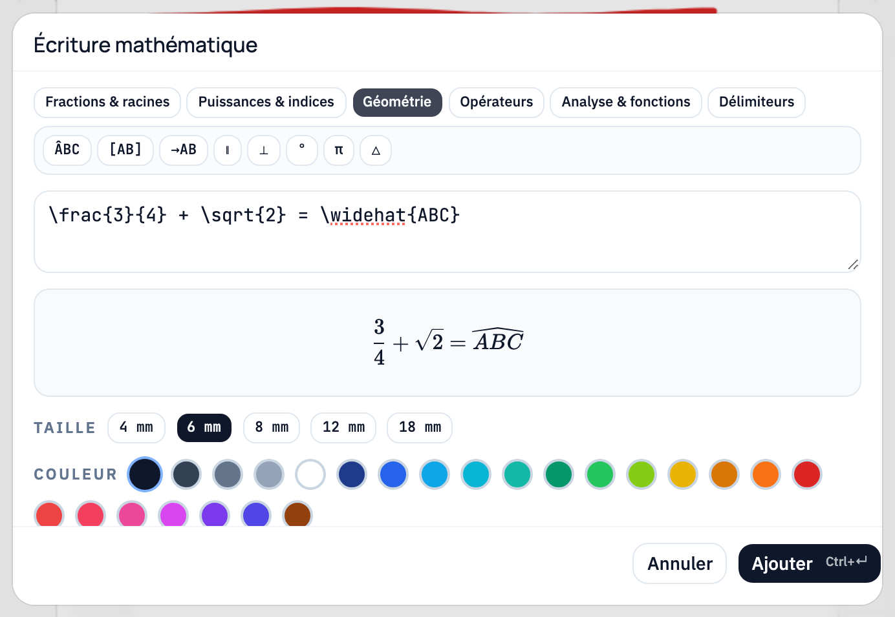
Calculatrice scientifique
Une calculatrice à affichage naturel : les fractions sont empilées et les racines couvrent bien leur contenu, comme sur les modèles de collège et de lycée.
Le clavier
- Modèles : fraction empilée, racine carrée, x², puissance libre, valeur absolue
- Fonctions : sin, cos, tan, ln, log, parenthèses, π, e, changement de signe
- Touches de service : AC, DEL, Ans (résultat précédent), S⇔D (exact ou décimal)
- Flèches pour circuler dans les cases d'une fraction et en sortir
- Une saisie impossible affiche Math ERROR au lieu d'un résultat faux
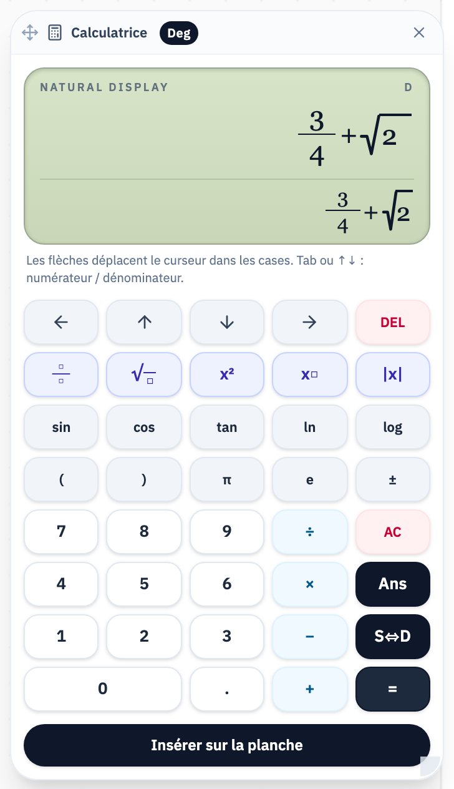
Poser le calcul au tableau
Le résultat s'insère sur la planche comme un bloc mathématique, mis en forme, que les élèves voient depuis le fond de la classe. Un bouton le retire si besoin.
La fenêtre se déplace par son en-tête et se redimensionne par le coin.
Horloge, chronomètre et décompte
Un widget flottant pour gérer le temps de classe, déplaçable et redimensionnable, à afficher au vidéoprojecteur pendant une activité.
Le widget
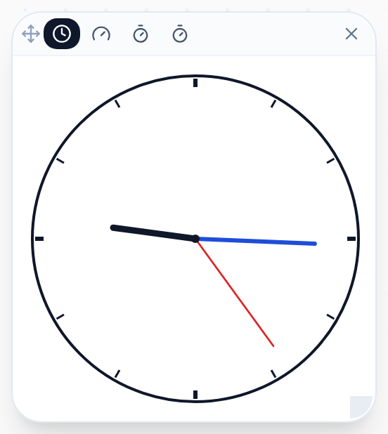
Horloge à aiguilles
Cadran dessiné en vectoriel, net à toutes les tailles — pratique pour travailler la lecture de l'heure.
Horloge numérique
L'heure en grands chiffres, lisible de loin.
Chronomètre
Départ, pause et remise à zéro : pour mesurer une activité ou un exercice.
Décompte
Réglable en minutes et secondes. À la fin, le cadre passe en rouge et affiche « Temps écoulé ! » — impossible de le manquer.
Images
Une photo, une capture d'écran ou un schéma, posé sur la planche et manipulé comme un objet physique.
Placer et manipuler
Par le menu Fichier → « Insérer une image… », ou par un simple collage système (ce que vous venez de copier ailleurs).
- Déplacer en glissant, redimensionner par la poignée du coin
- Pivoter par la poignée haute
- Réglage de transparence, duplication, suppression
Rogner
Entourez la zone à garder : le reste s'assombrit puis disparaît, sans que l'image bouge à l'écran. Quatre poignées sur les bords permettent d'ajuster finement, et un bouton revient à l'image entière.
Le PDF exporté contient l'image déjà recadrée, pas l'originale masquée.
Sélection, copie et calques
Lasso
Entourez ce que vous voulez : les traits, les figures et les textes à l'intérieur deviennent un groupe.
- Glisser dans le cadre déplace tout le groupe d'un bloc
- Recolorer, dupliquer ou supprimer d'un coup
Un seul trait
Avec l'outil Sélectionner, un clic sur un trait de crayon le prend tout seul et ouvre le même menu flottant : compteur, six couleurs, suppression.
Presse-papiers
Copier, couper et coller fonctionnent sur des groupes entiers. Le collage se fait sur la page affichée, à l'endroit du pointeur, et le groupe collé reste sélectionné pour être replacé aussitôt.
Calques
Figures, images et textes se classent librement en avant ou en arrière, y compris les uns par rapport aux autres : une flèche peut passer par-dessus une photo, un texte derrière une forme.
Pages et navigation
Un document GEOBOARD est un cahier : plusieurs pages, chacune avec ses propres annotations. Le navigateur de pages s'ouvre en cliquant sur l'indicateur « 3 / 7 », et se déplace où vous voulez à l'écran.
Tourner la page
La flèche droite ne bloque jamais : arrivé à la dernière page, elle en crée une nouvelle au même format et vous y dépose, comme on tourne la page d'un cahier.
Aller vers l'avant place la vue en haut de la nouvelle feuille, prête à écrire la première ligne ; revenir en arrière la place en bas de la précédente. Le zoom est conservé.
Organiser le cahier
- Ajouter une page blanche au format de la page courante
- Dupliquer une page avec toutes ses annotations
- Réorganiser par glisser-déposer ou par les boutons monter / descendre : les annotations suivent leur page
- Supprimer une page (la dernière page restante est protégée)
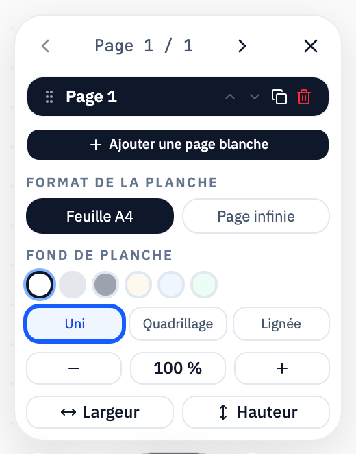
Format et fond
À tout moment, une planche existante bascule entre feuille A4 et page infinie. Le fond se change aussi en cours de route : six couleurs, et trois structures (uni, quadrillage, lignée avec marge rouge).
Se déplacer
Une barre de défilement verticale bien visible montre où vous êtes dans la page. Sur un document, la vue est bornée à la feuille : impossible de se perdre dans le vide en glissant trop loin.
PDF : importer et exporter
Importer
Le sujet ou l'exercice arrive à sa taille physique exacte (une page A4 fait 210 × 297 mm), une page à la fois, et le document prend le nom du PDF.
- Les polices et caractères spéciaux sont préservés
- Les calques masqués du PDF sont rendus visibles, donc rien ne disparaît à l'import
- Les pages importées sont verrouillées : impossible de les déplacer par accident
Exporter en PDF annoté
Le document complet repart en PDF à l'échelle 1:1, donc directement imprimable et distribuable comme corrigé.
- Les traits et les figures sont écrits en vectoriel, pas en capture d'écran
- Toutes les pages sont présentes, y compris les feuilles blanches ajoutées
- Surlignage en transparence, images recadrées, liens cliquables, formules en vraies lettres
Fichiers et enregistrement
Vos documents vous appartiennent : un fichier, dans le dossier que vous choisissez, transportable sur une clé USB.
Le fichier .geoboard
Un seul fichier contient tout le document modifiable : traits, figures, textes, images, état des instruments, pages — et le PDF source embarqué. Vous pouvez donc le reprendre sur une autre machine sans rien d'autre.
- Enregistrer réécrit le fichier ouvert, sans créer de doublon
- Enregistrer sous… choisit le dossier et le nom (ou ouvre le partage iOS)
- Le nom du fichier lié est rappelé dans la barre du haut
Jamais pendant que vous écrivez
L'enregistrement n'interrompt jamais le geste : écrire marque simplement le document « Modifié », et l'écriture sur le disque a lieu quand vous quittez la planche, changez d'onglet, ou quand l'iPad met l'app en arrière-plan.
Un voyant dans la barre du haut indique l'état : Prêt, Modifié, Enregistrement, Synchronisé.
Mode local
Sans serveur ni connexion, GEOBOARD bascule en stockage local et continue de fonctionner entièrement : création, ouverture, enregistrement, export. Un badge « Mode local » le signale.
C'est le fonctionnement normal des versions installées (iPad, macOS, Windows).
Renommer et fermer
Le titre se modifie d'un clic dessus. À la fermeture, une fenêtre propose d'enregistrer puis fermer, de fermer sans enregistrer, ou de supprimer définitivement le document.
Réglages
Les réglages sont accessibles depuis l'accueil et depuis la barre du haut d'une planche ouverte, par l'icône engrenage. Ils sont conservés d'une session à l'autre sur l'appareil.
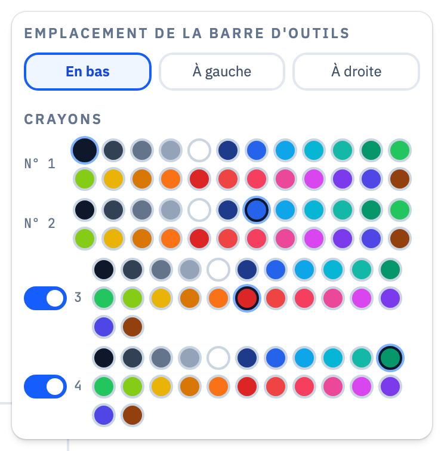
| Réglage | Valeurs | Effet |
|---|---|---|
| Emplacement de la barre d'outils | En bas · À gauche · À droite | Place la barre à l'horizontale en bas ou à la verticale sur un côté. Pratique pour un tableau interactif ou selon la main qui écrit. S'applique à la prochaine ouverture du document. |
| Couleur des crayons 1 à 4 | 24 encres par crayon | Définit la couleur de départ de chaque crayon, appliquée immédiatement à la planche ouverte. |
| Crayons 3 et 4 | Activés / désactivés | Allège la barre d'outils si deux crayons suffisent. Les crayons 1 et 2 sont toujours présents. |
| Réglage | Où | Valeurs |
|---|---|---|
| Couleur et épaisseur du crayon actif | Barre d'outils, pastille à côté des crayons | 24 couleurs · 0,4 / 0,8 / 2 / 4 mm |
| Surligneur | Barre d'outils, icône surligneur | 4 pastels · 4 / 8 / 14 mm · bande droite |
| Taille de gomme | Barre d'outils, quand la gomme est active | 0,75 / 1,5 / 4 / 8 / 16 mm |
| Transparence de l'équerre | Barre d'outils, quand l'équerre est posée | 15 à 100 %, pas de 5 % · Discrète / Moyenne / Pleine |
| Forme, trait et remplissage | Barre d'outils, icône formes | 6 figures · plein ou pointillés · intérieur vide ou coloré |
| Format de la planche | Navigateur de pages | Feuille A4 / Page infinie |
| Fond de planche | Navigateur de pages | 6 couleurs · uni / quadrillage / lignée |
| Zoom | Navigateur de pages | − / 100 % / + · ajuster Largeur ou Hauteur |
| Position du navigateur de pages | Poignée de déplacement | N'importe où à l'écran · double-clic pour réinitialiser |
Raccourcis clavier
Utiles avec un clavier relié à l'iPad, et sur les versions macOS et Windows. Sur Mac, remplacez Ctrl par Cmd.
| Touche | Action |
|---|---|
| V | Outil Sélectionner |
| P | Crayon |
| E | Gomme |
| Q | Afficher ou ranger l'équerre |
| W | Ajuster à la largeur de la page |
| 0 | Zoom 100 % (taille réelle) |
| Maj | Maintenu : segment contraint à 0°, 45° ou 90° · bande de surligneur droite |
| Échap | Tout désélectionner |
| Suppr / ← | Supprimer la sélection (trait, figure, texte, image, groupe) |
| Ctrl+Z | Annuler |
| Ctrl+Y · Ctrl+Maj+Z | Rétablir |
| Ctrl+C / X / V | Copier · couper · coller à l'endroit du pointeur |
| Ctrl+D | Dupliquer la sélection |
| Ctrl+S | Enregistrer le document .geoboard |
| Ctrl+Entrée | Valider la formule dans le composeur mathématique |
Sous le capot
Quelques choix techniques qui expliquent le comportement de l'application.
Tout en millimètres
L'unité interne est le millimètre réel, et une seule matrice de vue place le fond, les traits, les instruments et les blocs de texte. C'est ce qui garantit qu'une graduation d'équerre coïncide avec le document à n'importe quel zoom.
Un rendu qui ne rame pas
Le dessin passe par un canevas rafraîchi uniquement quand quelque chose a changé, donc une planche immobile ne consomme rien. Les images lourdes sont redessinées, pas recalculées.
Autonome
L'application fonctionne sans serveur. Elle existe en version iPad, macOS et Windows, et les documents du mode local ne sont jamais envoyés ailleurs.
Des menus qui ne gênent pas
Tout panneau contextuel est mesuré puis placé au-dessus, en dessous ou à côté de l'objet concerné — jamais par-dessus, sinon on ne pourrait plus le déplacer. Un seul panneau reste ouvert à la fois.